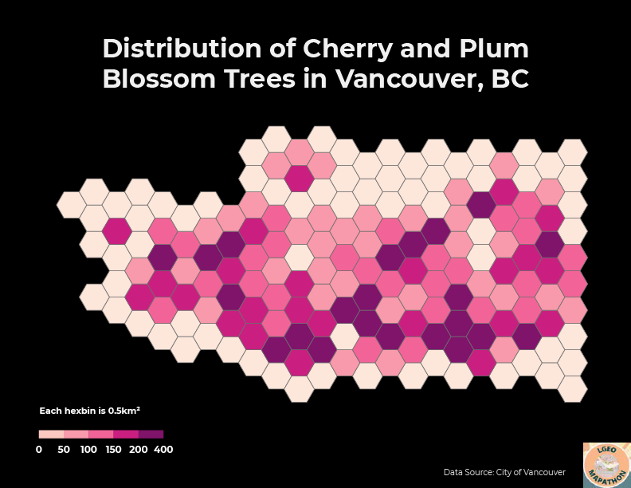
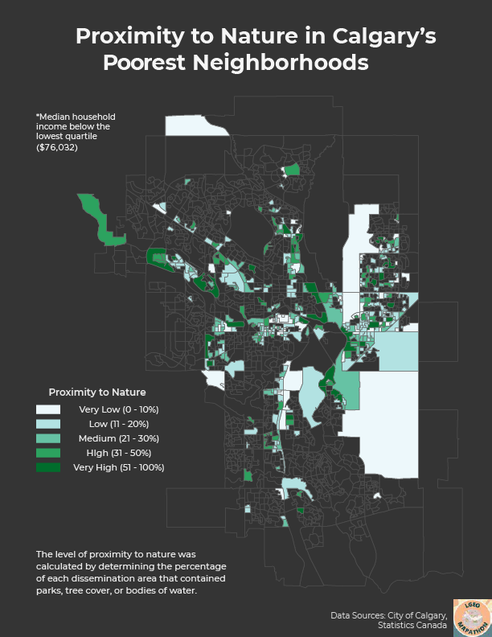

Licker Geospatial Mapathon 2021
I recently participated in Licker Geospatial's first ever mapathon and it was quite a challenging yet fulfilling experience. The mapathon consisted of two rounds - the first round being an hour long and focused on speed and style, while the second round was three hours long and involved some more advanced analysis. The datasets were provided by Licker Geospatial and the data theme was "trees". In addition, there was no limit to what software was allowed to be used, as long as the submission file was in a PDF format. Below, I share my submissions for the two rounds as well as my thought processes and the obstacles that I encountered.
The challenge for the first round was to create a map of cherry and plum blossom trees in Vancouver using the provided data. The datasets were created by the City of Vancouver and included street trees, bikeways, community gardens, parks, neighbourhoods, city boundary, and more. As the street tree dataset consisted of thousands of points each representing individual trees, I decided to create a hexbin map to show the spatial density of the trees in a more visually appealing fashion. I used the Generate Tessellation tool in ArcGIS Pro to create 0.5m² hexagons using the Vancouver city boundary dataset as the extent. As the output from the Generate Tessellation tool purposely extends beyond the input extent, I deleted the extra hexagons from the layer to more accurately resemble Vancouver's boundary. Next, I used the Summarize Within tool to calculate the number of cherry and plum blossom trees in each hexagon, creating my final output. I applied a pink/purple symbology to match the dataset theme and exported the layout into Adobe Illustrator for further editing and final touches.
For the second round, the goal was to analyze Calgary tree canopy data along with a host of other datasets to come to a justifiable conclusion. There were over two dozen wildly varying datasets included, such as census data, air quality, transit routes, crime statistics, flood maps, traffic volumes, and watersheds. During the first 30 minutes, I skimmed through the data but struggled to come up with an idea due to the overwhelming number of datasets available. I decided to incorporate census data as it was something that I have worked with in the past and felt comfortable with. I was already somewhat familiar with the geography of Calgary and knew that there is somewhat of an East/West divide with citizens generally working in the east side while residing in the west. In addition, the west side is home to significantly more newer and wealthier neighborhoods. I was curious if this pattern extended to the amount of green space as well so I combined tree canopy area, park area, water body area to determine what percentage of each dissemination area (DA) contained nature and compared this metric between Calgary's poorest and wealthiest neighborhoods.
First, I symbolized the census data by applying a quantile classification with 4 classes on the median household income statistic to calculate the income quartiles. I then exported the DA's with household incomes below $76,032 and above $123,136 to obtain my low income and high income neighborhood layers, respectively. Next, I needed to calculate areas for all of my layers as they were provided in shapefile format, which does not automatically calculate shape area unlike feature classes. I used the Calculate Geometry Attributes tool to get the areas in square meters, which worked well except for the tree canopy data since the dataset had over 1.6 million rows and took over 30 frustrating minutes to calculate (I later realized that I could have accomplished this in about 2 minutes by simply converting the shapefile to a feature class). Afterwards, the Summarize Within tool was used to calculate the areas of tree canopies, parks, and water bodies in each DA for both the low income and high income neighborhood layers. Finally, I used Calculate Field to create a new field to sum up the areas and determine the percentage of the total DA area that contained nature. Both layers had matching symbologies applied and were exported to Adobe Illustrator for further editing and final touches.
Comparing the two maps, it is clear to see the income divide between Calgary's east and west sides. Furthermore, we see that the wealthiest neighborhoods tend to have a higher amount of green space (31.7% average) compared to the poorest neighborhoods (22.5% average). While this may not have been the most scientifically accurate analysis, I made do with the data that I was given and I believe that these maps further highlight the inequities across Calgary. Unfortunately, I ran out of time and was not able to finish these maps before the submission deadline, however, I hope to participate in next year's mapathon and work even harder!